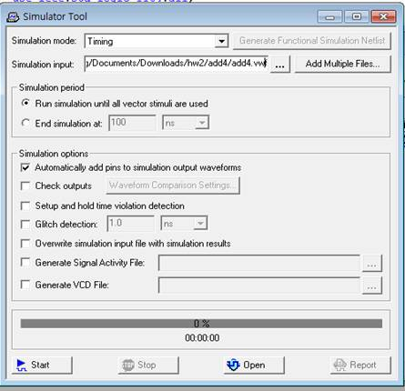
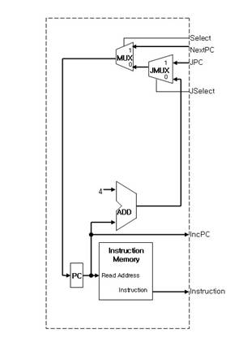

CA
Project
1 Quatus Setup
2 Download pre-builded block
이중 여기에서는 adder4만 예로 들겠다.
EX)
Adder4
walk
through
직접 작성하는 방법과 다운받은 컴포넌트 파일을 실행하는 방법 2가지가 있다.
다운받은 파일은 project파일을
로드 하면 된다. 여기서는 직접작성만 설명하겠다
3 Make Project
새로운 프로젝트를 생성한다.
File -> New Project
Wizard...
Wizard의
실행 순서를 안내하는 화면이다. Next> 를 클릭하자.
첫째 항목은 프로젝트를 생성할 디렉토리를 입력합니다.
두번째 항목은 프로젝트의 이름을
입력합니다.
세번째 항목은 프로젝트의 엔티티를 선언하는 곳으로 나중에 vhd파일을 작성할 때 정확히 일치해야 합니다.
홈페이지의 프로젝트 파일과 완전히 동일하게 만들려면 이들을 각각 Add4, Add4, eAdd4라고 정의해야 합니다 - 위의 그림에 나타난 이름과는 다름에 유의하십시오.
예(Y)를 눌러 새 폴더를 만듭니다.
vhd파일
직접 작성
File -> New... 에서
새로운 vhd파일을 작성합니다.
vhd파일
작성
library ieee;
use ieee.std_logic_1164.all;
use ieee.std_logic_arith.all;
use
ieee.std_logic_signed.all;
use ieee.numeric_std.all;
entity add4
is
port (
pIn :
in std_logic_vector(31 downto 0);
pOut :
out std_logic_vector(31 downto 0)
);
end add4;
architecture behavior of add4
is
begin
process(pIn)
begin
pOut
<= pIn +4;
end
process;
end behavior;
붉은색으로 쓰여진 add4는 서로 일치
해야 하고 프로젝트 생성시에 top entity와도 일치 해야 합니다.
library ieee;
use ieee.std_logic_1164.all;
use ieee.std_logic_arith.all;
use
ieee.std_logic_signed.all;
use ieee.numeric_std.all;
는 어떠한 라이브러리를 사용할것인지를 미리 알려줍니다.
pIn : in std_logic_vector(31
downto 0);
에서 pIn은 입력받는핀으로 31-0까지의 버스선을 의미합니다.
pOut <= pIn +4; 은 pOut에 pIn+4를 더해서 출력합니다.
File -> save 또는 ctrl+s 를 눌러서 add4.vhd로 저장합니다.
이외의 vhdl문법은 인터넷이나 책을
찾아보시기 바랍니다.
컴파일
Start
Compilation을 클릭하여
컴파일합니다.
시뮬레이션
새로운 Vector
wave 파일을 만듭니다. File -> New
Name의
빈칸을 더블클릭하여 Insert Node or Bus창을 띄웁니다.
Node Finder를
선택하여서 핀을 불러옵니다.
핀을 모두 선택후 OK를 누릅니다.
값을 Hex로 설정한후 시뮬레이션 할 Input wave를 그려줍니다. 왼쪽하단에 C를 선택하여 클럭 마다 1씩 증가하게 설정합니다.
Simulator
Tool에서 웨이브 파일을 input파일으로
설정합니다.

Start
Simulation을 클릭합니다.
결과 확인
4씩
증가한 값을 확인 할 수 있습니다.
# IF (Instruction Fetch stage)

1. download the
'IF(Instruction Fetch stage)' project file
2. IF project file 만드는 방법
Adder설명과 같은 방법으로 프로젝트를 생성합니다.
프로젝트 명은 IF로 합니다.
※ 필요한 vhd files을 추가한다.
(IF stage에서는 PC, Instruction
memory, 32bits 4-adder, 2-to-1 MUX 2개가 필요함)
write source
|
-- 각 연산자 또는 선언에 대한 정의가 되어 있는 library를 include library ieee; use ieee.std_logic_1164.all; use ieee.std_logic_arith.all; use ieee.std_logic_signed.all; -- 설계하고자 하는 블록의 이름을 정의 (여기에서는 'eIF'로 선언) entity eIF is -- 블록의 입력과 출력에 대한 선언 port( pNextpc:in std_logic_vector(31 downto 0); pIncpc:out std_logic_vector(31 downto 0); pInstruction:out std_logic_vector(31 downto 0); pJPC:in std_logic_vector(25 downto 0); pJSelect:in std_logic; pSelect:in std_logic; pReset:in std_logic; pClock:in std_logic ); end eIF; -- 구조에 대한 선언을 위한 블록 architecture behavior of eIF is -- 필요한 components 정의 (각 블록의 소스코드 중 port부분) component eMux32 port( pIn0: in std_logic_vector(31 downto 0); pIn1: in std_logic_vector(31 downto 0); pSelect: in std_logic; pOut: out std_logic_vector(31 downto 0) ); end component; component eAdd4 port ( pIn: instd_logic_vector(31 downto 0); pOut: outstd_logic_vector(31 downto 0) ); end component; component ePC port( pIn:in std_logic_vector(31 downto 0); pOut:out std_logic_vector(31 downto 0); pReset:in std_logic; pClock:in std_logic ); end component; component eImem port ( pReadaddr: instd_logic_vector(31 downto 0); pDataout: outstd_logic_vector(31 downto 0); pClock: instd_logic ); end component; component eJmux port( pNPC: in std_logic_vector(31 downto 0); pJPC: in std_logic_vector(25 downto 0); pSelect: in std_logic; pOut: out std_logic_vector(31 downto 0) ); end component; -- 필요한 signal 정의 signal sInstruction:std_logic_vector(31 downto 0); signal sNpc:std_logic_vector(31 downto 0); signal sCpc:std_logic_vector(31 downto 0); signal sIpc:std_logic_vector(31 downto 0); signal sJpc:std_logic_vector(31 downto 0); -- begin behavior begin -- output port pIncpc<=sCpc; process(pReset,sInstruction) begin if pReset='1' then pInstruction<=X"FFFFFFFF"; else pInstruction<=sInstruction; end if; end process; -- component connect cPC:ePC port map(sNpc,sCpc,pReset,not pClock); cimem:eImem port map(sCpc,sInstruction,pClock); cadd4:eAdd4 port map(sCpc,sIpc); cmux:eMux32 port map(sJpc,pNextpc,pSelect,sNpc); cjmux:eJmux port map(sIpc,pJPC,pJSelect,sJpc); end behavior; |
.
compile (위 ‘adder'에서 설명하였으므로
생략)
시뮬레이션을 위해서는 vector wave form file, instruction memory file이 필요하다.
※
Instruction memory initialize
-
if you want to translate assembly code into hexadecimal machine code,
SPIM시뮬레이터를 설치하고
bubblesort_without_j.asm파일을 불러옵니다.
Quartus에서 File -> new 메모리
파일을 작성합니다.
SPIM을 다시 불러와서 mif파일에 채워넣습니다.
0번지에서부터 SPIM의 Start 라벨을 차례대로 채워나가면 됩니다.